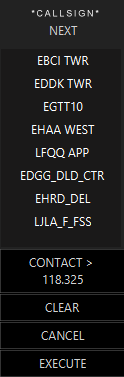

NEXT Pop Up Menu
The NEXT Pop Up Menu is part of the Callsign Pop Up Menu and is used to set the NEXT frequency/controller for the aircraft.
It is accesible through the Callsign Pop Up Menu by pressing NEXT in that menu.
The title of the menu will indicate the callsign of the target upon which the menu options will take effect, followed by the word “NEXT”.
The NEXT Pop Up Menu looks like this

ATCs
The top part of the menu lists the various ATC positions which are currently online and within network visibility of your current position. Selecting one of these atc positions from the menu will store it for future use as the next controller for that specific target to make contact with; it will NOT request them to make contact or assign control to them at that time. If one of the ATCs in the list is currently assigned as the next controller, it will be highlighted in the list.
If you have a large radar range, then the list of available ATC's could be potentially very long, in which case a scroll-bar may also be displayed.
CONTACT > <frequency>
This will send a message to the selected target (as a CPDLC transmission) instructing them to contact the controller making the request. The transmission will also include the COM frequency required to make the contact.
CLEAR
Removes a previously assigned “next” assignment from the selected target.
CANCEL
Cancels any changes which may have been made to the “next” assignment from this use of the menu, restoring whatever was previously assigned.
EXECUTE
Selects the ATC highlighted from the list at the top of the menu, and assigns it as the “next” controller, then closes the menu. This can also be achieved by double-clicking the ATC name in the list.